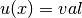
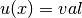

解の出力と表示¶
getfemの計算結果を見るには、基本的に4つの方法があります。
matlabインターフェースを使用したMatlabによる出力
オープンソースのMayaviやその他のVTKファイルビューア
オープンソースプログラムのOpenDX
オープンソースプログラムのGmsh
出力できるオブジェクトは、 mesh 、 mesh_fem 、 stored_mesh_slice オブジェクトです。
Matlabインターフェース用のmeshとmesh_femオブジェクトの保存¶
Matlabインターフェースをインストールしている場合は、単に mesh_fem::write_to_file を実行し、解をプレーンテキストファイルとして保存し、Matlabにロードしてください。例えば、 mesh_fem mf 上に解 U を持っている場合 、
std::fstream f("solution.U",std::ios::out);
for (unsigned i=0; i < gmm::vect_size(U); ++i)
f << U[i] << "\verb+\+n";
// when the 2nd arg is true, the mesh is saved with the |mf|
mf.write_to_file("solution.mf", true);
と入力し、matlabで以下を実行します。
>> U=load('solution.U');
>> mf=gfMeshFem('load','solution.mf');
>> gf_plot(mf,U,'mesh','on');
詳細については、getfem-matlabインタフェースのドキュメントを参照してください。
他の2つのファイルフォーマット、すなわちVTKファイルフォーマット、 OpenDX ファイル形式と Gmsh 後処理ファイル形式の両方では、 getfem::mesh または getfem::mesh_fem のどちらかを出力するだけでなく、より汎用性の高い getfem::stored_mesh_slice を出力します。
使用例はtestsディレクトリの例にあります。
メッシュスライスの生成¶
GetFEM++ は “slicers” オブジェクトを提供します。このオブジェクトはポストメッシュとソリューションからの処理データです。これらのスライサーは、ファイル getfem/getfem_mesh_slicers.h で定義され mesh を利用します（時には 解フィールド）を入力して、 平面との交差 、 メッシュの抽出境界 、 各凸包の改善 、 等値面の抽出 等これらのスライサーの出力は、 getfem::stored_mesh_slice オブジェクトに格納することができます（ getfem/getfem_mesh_slice.h を参照 ）。 stored_mesh_slice オブジェクトは高速補間を伴う非等角メッシュ上のP1不連続FEMとして、スライスはセグメント、3角形、4面体で作られているので、元のメッシュの凸包は常に単純化されています。
すべてのスライサー操作は getfem::slicer_action から継承しています。新しいスライス操作を作成するのは非常に簡単です。スライサーの例は（いくつかは getfem::mesh_slice_cv_dof_data_base を使用しています。これは mesh_fem mf と mesh_fem 上のフィールド U への単なる参照です）。
- getfem::slicer_none()¶
空のスライサー
- getfem::slicer_boundary(const mesh &m, ldots)¶
メッシュの境界を抽出します
- getfem::slicer_apply_deformation(mesh_slice_cv_dof_data_base &)¶
変形をメッシュに適用する、 mesh_fem 上の変形フィールド
- getfem::slicer_half_space(base_node x0, base_node n, int orient)¶
半分の体積（ orient = -1または+1の場合）または面（ orient = 0の場合）でメッシュをカットする、 x0 は面節点で、 n は面の法線。
- getfem::slicer_sphere(base_node x0, scalar_type R, int orient)¶
中心 x0 と半径 R の内部（ orient = -1）、境界（ orient = 0）または外部 （ orient = + 1）でカットします。
- getfem::slicer_cylinder(base_node x0, base_node x1, scalar_type R, int orient)¶
軸（x0、x1）の半径 R の円柱の内側/境界/外側のスライス。
- getfem::slicer_isovalues(const mesh_slice_cv_dof_data_base& mfU, scalar_type val, int orient)¶
スカラーフィールド mfU と val で定義された等値面でカットします。シンプレックスをまとめておきます
 ( orient =-1),  ( orient=0 または
( orient =-1),  ( orient=0 または  )。
)。
- getfem::slicer_mesh_with_mesh(const mesh& m2)¶
メッシュ m2 の凸包で凸包をカットします。
- getfem::slicer_union(const slicer_action &sA, const slicer_action &sB)¶
2つのスライサー操作の出力をマージします。
- getfem::slicer_intersect(slicer_action &sA, slicer_action &sB)¶
2つのスライサー操作の出力を交差させます。
- getfem::slicer_complementary(slicer_action &s)¶
スライサー操作の補完を返します。
- getfem::slicer_build_edges_mesh(mesh& edges_m)¶
そのスライスメッシュのエッジでメッシュ edges_m を構築します。
- getfem::slicer_build_mesh(mesh &m)¶
ある種の（まれな）場合には、スライスからメッシュを構築すると便利かもしれません。しかし、（しばしばそうですが）メッシュが等角になります。
- getfem::slicer_build_stored_mesh_slice(stored_mesh_slice& sl)¶
スライシング操作の出力を stored_mesh_slice オブジェクトに記録します。 stored_mesh_slice::build(...) を使うほうが同じ結果を得るには便利なことに留意してください。
- getfem::slicer_explode(c)¶
重心に対してそれぞれの凸包を縮小または拡大します。
これらのスライサーを適用するには、 getfem::mesh_slicer(mesh&) オブジェクトを作成し、 getfem::slicer_action を mesh_slicer::push_back_action(slicer_actio&) と mesh_slicer::push_front_action(slicer_action&) 。スライシング操作は最終的に mesh_slicer::exec(int nrefine) （または mesh_slicer::exec(int nrefine, const mesh_region&cvlst) により、メッシュのサブ集合、またはその境界などに対する操作などを行うことができます）。
nrefine パラメータは非常に重要です。なぜなら、最終結果の”精度”はこの変数に依存するからです。最後のスライスで表現されるデータが線形幾何変換を持つ凸面のP1データだけである場合、 nrefine=1 が正しい選択ですが、P2、P3、非線形変換などでは、スライス操作中に元のメッシュの各凸面を改良する方が良いです。 ほとんどの視覚化プログラム（gmsh、mayavi、opendx、matlabなど）は、非常に単純な構造（線形セグメント/3角形/4面体にP1不連続データを持つ）上に有限要素フィールドを正確に表現することができます。
使用例（メッシュ m の境界を半分にカットし、結果を stored_mesh_slice に保存します）:
getfem::slicer_boundary a0(m);
getfem::slicer_half_space a1(base_node(0,0), base_node(1, 0), -1);
getfem::stored_mesh_slice sl;
getfem::slicer_build_stored_mesh_slice a2(sl);
getfem::mesh_slicer slicer(m);
slicer.push_back_action(a1);
slicer.push_back_action(a2);
int nrefine = 3;
slicer.exec(nrefine);
スライシング操作中に getfem::stored_mesh_slice オブジェクトを構築するための、 stored_mesh_slice::build() メソッドは明らかに slicer_build_stored_mesh_slice スライサーを使うよりも便利です。
getfem::stored_mesh_slice sl;
sl.build(m, getfem::slicer_boundary(m),
getfem::slicer_half_space(base_node(0,0), base_node(1, 0), -1),
nrefine);
これらのスライスを使用する最も簡単な方法は、それらをvtk、opendx、またはgmshに出力することです。 getfem/getfem_export.h には3つのクラスがあります： getfem::vtk_export 、 getfem::dx_export 、および getfem::pos_export です。
mesh か mesh_fem またはスライスをVTKに出力します¶
まず、VTKデータファイルの制限を知っておくことが重要です。各ファイルには、1つのメッシュだけが含まれ、このメッシュにはスカラーフィールドが1つ、ベクトルフィールドが1つとテンソルフィールドが1つ（この順序で）含まれます。VTKファイルは、セグメント、3角形、4角形、4面体、6面体のデータを扱うことができます。 2次の3角形、セグメントなどはサポートされていると言われていますが、スライスを構築するときは nrefine=2 を使うのと同じです。 VTKデータファイルは、複数のタイプの要素（例えば、3角形や4角形などのメッシュ）を使用してメッシュをサポートしています。
例えば、 stored_mesh_slice の sl が既にビルドされていると仮定します。
// an optional the 2nd argument can be set to true to produce
// a text file instead of a binary file
vtk_export exp("output.vtk");
exp.exporting(sl); // will save the geometrical structure of the slice
exp.write_point_data(mfp, P, "pressure"); // write a scalar field
exp.write_point_data(mfu, U, "displacement"); // write a vector field
この例では、スライス P と U のフィールドは、スライス 節点に書き込まれ、VTKフィールドに書き込まれます。ベクトルフィールドは常にスカラーフィールドの後に書かれます（テンソルフィールドは最終です）。
スライスを構築せずにmfを出力することもできます。
// an optional the 2nd argument can be set to true to produce
// a text file instead of a binary file
vtk_export exp("output.vtk");
exp.exporting(mfu);
exp.write_point_data(mfp, P, "pressure"); // write a scalar field
exp.write_point_data(mfu, U, "displacement"); // write a vector field
しかし、このアプローチでは vtk_export はそれぞれの VTK要素型に mfu の凸面/有限要素法を指定します。そのため、VTKが2次より次数の大きいの要素を扱わない場合、より高い次元の有限要素法の精度が失われます。
mesh か mesh_fem またはスライスをOpenDXに出力する¶
OpenDXのデータファイルはVTKよりも汎用性があり、より多くのメッシュ、これらのメッシュの任意の数のフィールドなどを格納することができます。しかし、それが可能なのは1次と0次の要素（セグメント、3角形、4面体、4角形など）です。そして、それぞれのメッシュは1つのタイプしか作成できません。要素の3角形と4角形を同じオブジェクトに混在させることはできません。その理由から、（複雑な要素が単純化されている） getfem::stored_mesh_slice オブジェクトを getfem::mesh_fem および getfem::mesh オブジェクトよりも使用します。
基本的な使い方は getfem::vtk_export と非常に似ています。
getfem::dx_export exp("output.dx");
exp.exporting(sl);
exp.write_point_data(mfu, U, "displacement");
さらに、 getfem::dx_export は ‘.dx’ ファイルを再オープンして新しいデータを追加することができます。そこで、多くの時間ステップを保存すれば、OpenDXの中間結果を確認することができます。コンストラクタの雛形は次の通りです。
dx_export(const std::string& filename, bool ascii = false, bool append = false);
dx_export(std::ostream &os_, bool ascii = false);
複数の時間ステップを持つ使用例（ tests/dynamic_friction.cc を参照）は次の通りです。
getfem::stored_mesh_slice sl;
getfem::dx_export exp("output.dx", false);
if (N <= 2) sl.build(mesh, getfem::slicer_none(),4);
else sl.build(mesh, getfem::slicer_boundary(mesh),4);
exp.exporting(sl,true);
// for each mesh object, a corresponding ``mesh'' object will be
// created in the data file for the edges of the original mesh
exp.exporting_mesh_edges();
while (t <= T) {
...
exp.write_point_data(mf_u, U0);
exp.serie_add_object("deformation");
exp.write_point_data(mf_vm, VM);
exp.serie_add_object("von_mises_stress");
}
この例では、時間ステップごとにOpenDXの “時系列”が作成され、2つのデータフィールドが保存されます。”deformation”と呼ばれるベクトルフィールドと、”von_mises_stress”というスカラーフィールドです。
dx_export::exporting_mesh_edges() 関数はこれは、出力されたメッシュごとに、オリジナルの メッシュも（別のOpenDXメッシュに）出力されます。この例では、OpenDXは4つのデータフィールドにアクセスします。”deformation”、”deformation_edges”、”von_mises_stress”と”von_mises_stress_edges”。
tests/dynamic_friction.net はこれらのデータのためのOpenDXプログラムの例です(cd tests; dx -edit dynamic_friction.net、メニュー”実行/シーケンサー”で実行してください)。

目次
前のトピックへ
次のトピックへ
Download
Main documentations
- GetFEM++ User documentation
- Python Interface
- Matlab Interface
- Scilab Interface
- Gmm++
- GetFEM++ project